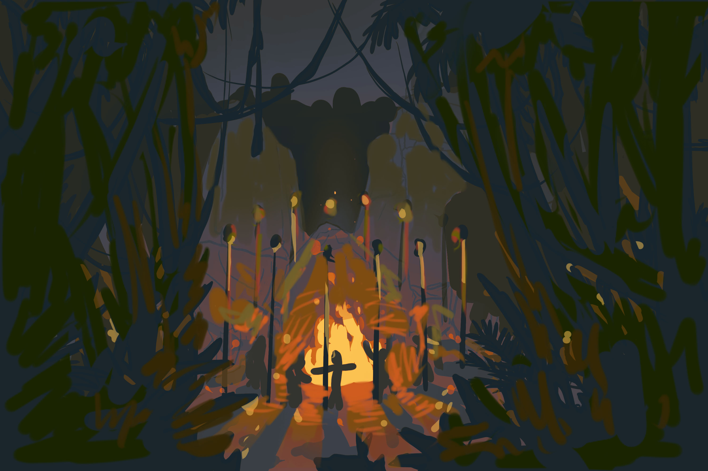
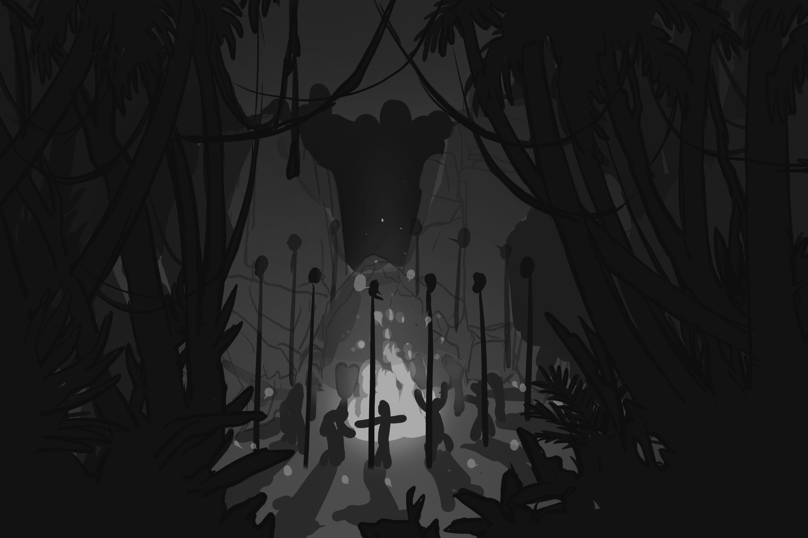
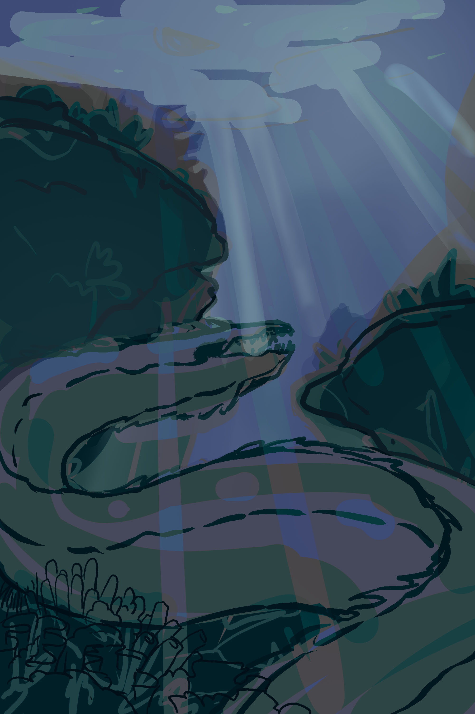
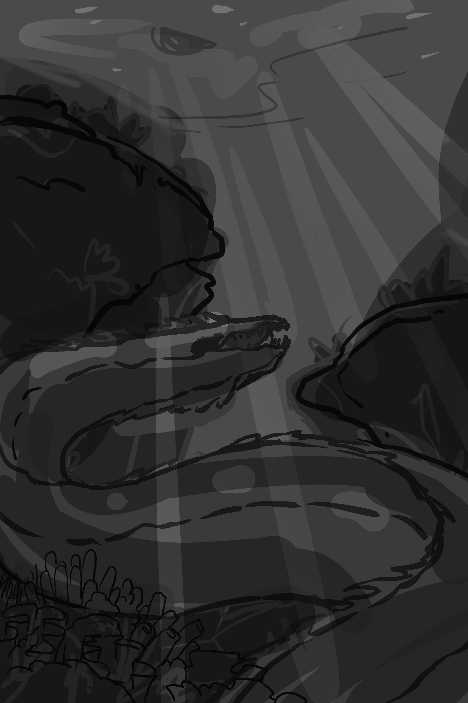
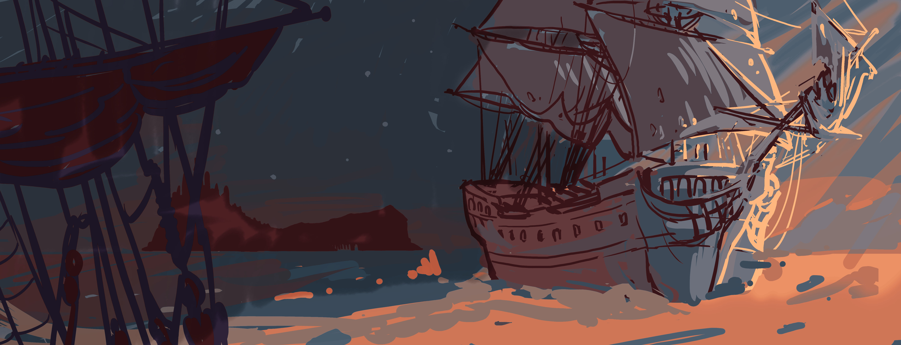

Prince Aquamarine
A princely object world: aquamarine casket, staff, fabrics, and printed boards.
| Title | «Принц Аквамарин» — французская сказка Луизы Кавалье Левек (1722). |
|---|---|
| Year | 1722 |
| Field | Costume / props |
| Description | Злая ведьма прокляла принца Аквамарина: любой, кто взглянет на него, погибнет. Принцу приходится преодолеть множество испытаний, чтобы разрушить чары и найти свою возлюбленную, которая томится в Тёмной башне. |

 1.jpg 1.jpg |  1_r1.jpg |
 1_r2.jpg |  2_1.jpg 2_1.jpg |
 2_2.jpg 2_2.jpg |  2_l1.jpg |
 2_l2.jpg |  3.jpg 3.jpg |
 4_1.jpg 4_1.jpg |  4_2.jpg |
 5.jpg 5.jpg |  5_l1.jpg 5_l1.jpg |
 5_l2.jpg 5_l2.jpg |